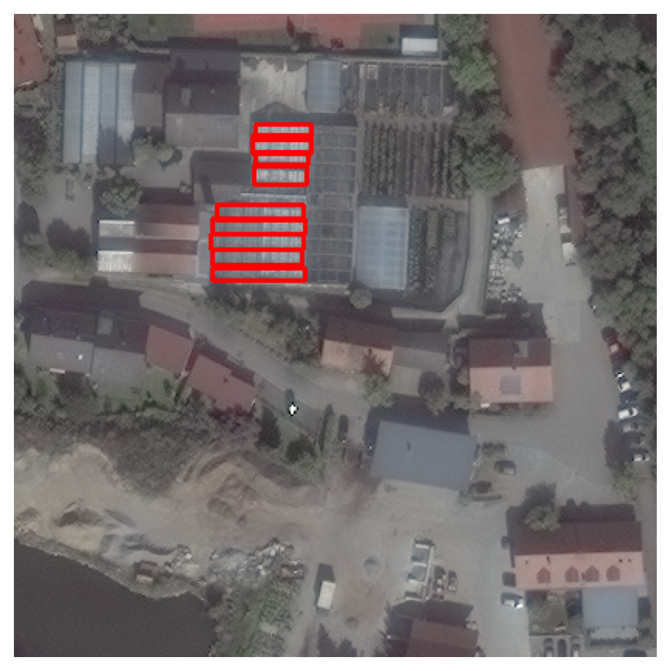
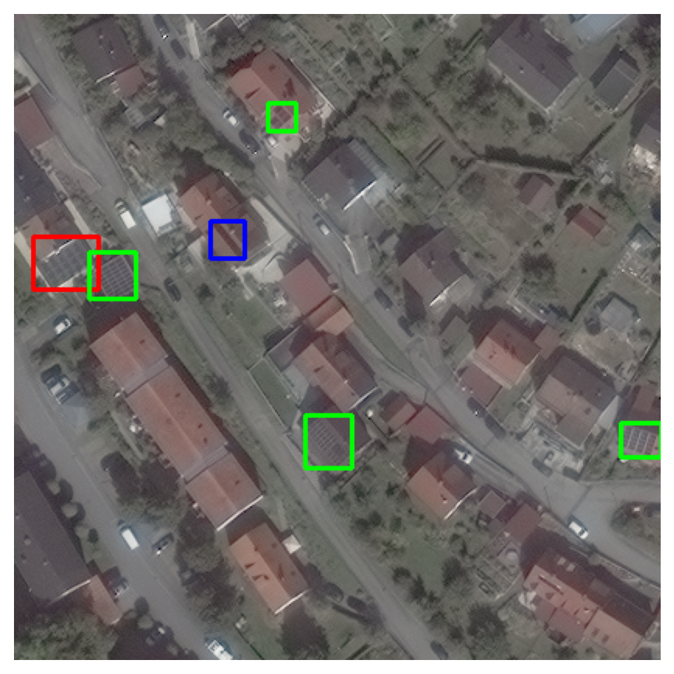
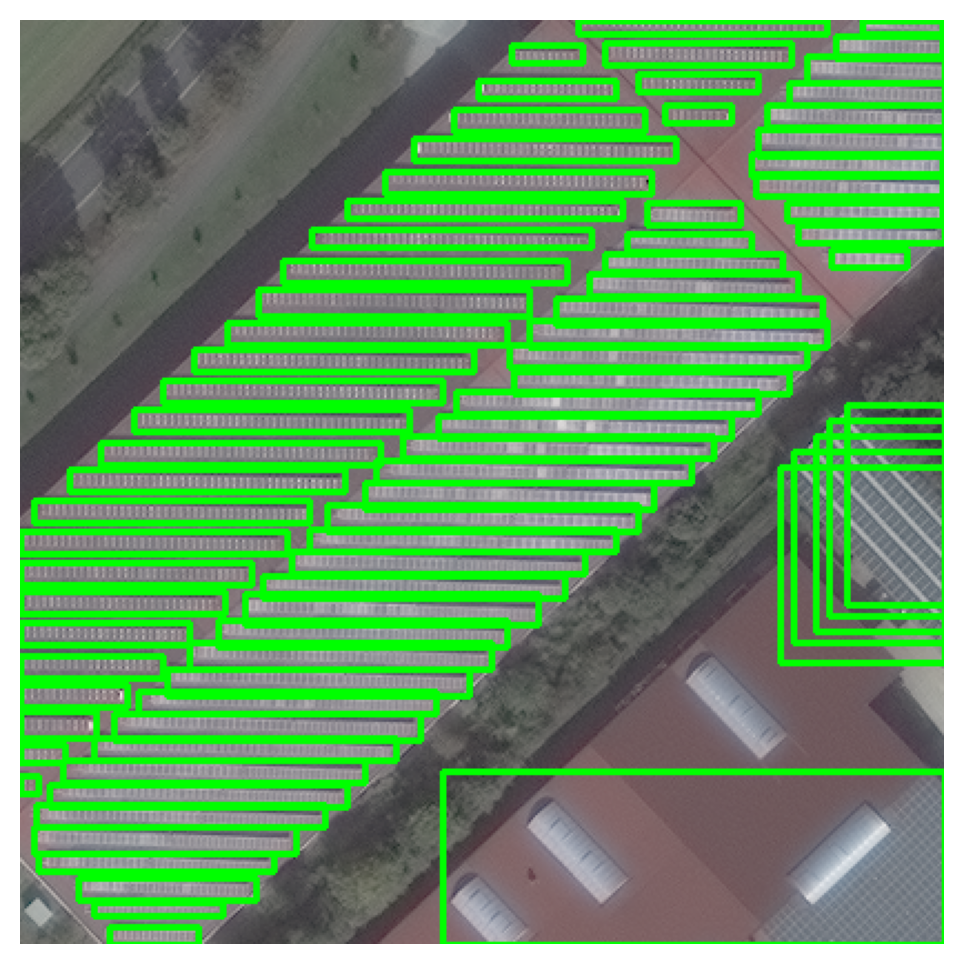

import os
import shutil
import matplotlib.pyplot as plt
import random
import pandas as pd
from collections import Counter
import cv2
%matplotlib inline
%config InlineBackend.figure_format = 'retina'images_dir = "./data/images"
labels_dir = "./data/labels"images_base = set([f.split('.')[0] for f in os.listdir(images_dir)])
labels_base = set([f.split('.')[0] for f in os.listdir(labels_dir)])
intersection = images_base.intersection(labels_base)
uncommon_files = images_base.symmetric_difference(labels_base)
images = [f for f in os.listdir(images_dir) if f.split('.')[0] in intersection]
labels = [f for f in os.listdir(labels_dir) if f.split('.')[0] in intersection]
images_ = [f.split('.')[0] for f in sorted(images)]
labels_ = [f.split('.')[0] for f in sorted(labels)]data = []
for img, lbl in zip(images_, labels_):
with open(os.path.join(labels_dir, lbl + ".txt"), 'r') as f:
class_ids = [line.split()[0] for line in f]
with open(os.path.join(labels_dir, lbl + ".txt"), 'r') as f:
str = f.read()
if class_ids:
class_ids = Counter(class_ids)
data.append((img, str, class_ids['0'], class_ids['1'], class_ids['2']))
df = pd.DataFrame(data, columns=['image', 'label', 'Tile0', 'Tile1', 'Tile2'])df| image | label | Tile0 | Tile1 | Tile2 | |
|---|---|---|---|---|---|
| 0 | solarpanels_native_1__x0_0_y0_6845_dxdy_416 | 0 0.8725961538461539 0.7007211538461539 0.0576... | 8 | 0 | 0 |
| 1 | solarpanels_native_1__x0_0_y0_6963_dxdy_416 | 0 0.8725961538461539 0.4170673076923077 0.0576... | 12 | 0 | 1 |
| 2 | solarpanels_native_1__x0_0_y0_7119_dxdy_416 | 0 0.8725961538461539 0.042067307692307696 0.05... | 17 | 0 | 1 |
| 3 | solarpanels_native_1__x0_0_y0_7229_dxdy_416 | 0 0.875 0.013221153846153848 0.028846153846153... | 14 | 0 | 1 |
| 4 | solarpanels_native_1__x0_0_y0_7230_dxdy_416 | 0 0.875 0.01201923076923077 0.0288461538461538... | 14 | 0 | 1 |
| ... | ... | ... | ... | ... | ... |
| 2537 | solarpanels_native_3__x0_9952_y0_11824_dxdy_416 | 0 0.7524038461538461 0.34615384615384615 0.048... | 5 | 0 | 0 |
| 2538 | solarpanels_native_3__x0_9965_y0_11241_dxdy_416 | 0 0.9771634615384616 0.2403846153846154 0.0360... | 3 | 0 | 0 |
| 2539 | solarpanels_native_3__x0_9972_y0_12567_dxdy_416 | 0 0.4074519230769231 0.6490384615384616 0.1658... | 2 | 0 | 0 |
| 2540 | solarpanels_native_3__x0_9979_y0_10637_dxdy_416 | 0 0.30649038461538464 0.6598557692307693 0.074... | 5 | 0 | 0 |
| 2541 | solarpanels_native_3__x0_9990_y0_9864_dxdy_416 | 0 0.45072115384615385 0.5913461538461539 0.127... | 16 | 0 | 0 |
2542 rows × 5 columns
print("Original Dataset:\n", df['Tile0'].sum(), df['Tile1'].sum(), df['Tile2'].sum())Original Dataset:
29267 130 228MultilabelStratifiedKFold ensure that each fold in a k-fold cross-validation retains the distribution of labels present in the original dataset. This is particularly useful when the dataset is imbalanced.
from iterstrat.ml_stratifiers import MultilabelStratifiedKFold# 80-20 split of train-test
mskf = MultilabelStratifiedKFold(n_splits=5, shuffle=True)
X = df['image'].values
y = df[['Tile0', 'Tile1', 'Tile2']].values
for train_index, test_index in mskf.split(X, y):
train = df.loc[train_index]
test = df.loc[test_index]
print(train['Tile0'].sum(), train['Tile1'].sum(), train['Tile2'].sum(), "\n", test['Tile0'].sum(), test['Tile1'].sum(), test['Tile2'].sum())
break
print()
# 10% of train set for validation
mskf = MultilabelStratifiedKFold(n_splits=10, shuffle=True)
X_train = train['image'].values
y_train = train[['Tile0', 'Tile1', 'Tile2']].values
for train_index, val_index in mskf.split(X_train, y_train):
train = df.loc[train_index]
val = df.loc[val_index]
print(train['Tile0'].sum(), train['Tile1'].sum(), train['Tile2'].sum(), "\n", val['Tile0'].sum(), val['Tile1'].sum(), val['Tile2'].sum())
break
print()
# should be 72%, 20%, 8%
print(len(train)/len(df) * 100, len(test)/len(df) * 100, len(val)/len(df) * 100)23424 102 181
5843 28 47
23765 114 171
2194 7 31
72.02989771833202 19.98426435877262 7.985837922895358train_image_dir = "./data/train/images"
train_label_dir = "./data/train/labels"
test_image_dir = "./data/test/images"
test_label_dir = "./data/test/labels"
val_image_dir = "./data/val/images"
val_label_dir = "./data/val/labels"
os.makedirs(train_image_dir, exist_ok=True)
os.makedirs(train_label_dir, exist_ok=True)
os.makedirs(test_image_dir, exist_ok=True)
os.makedirs(test_label_dir, exist_ok=True)
os.makedirs(val_image_dir, exist_ok=True)
os.makedirs(val_label_dir, exist_ok=True)for i, row in train.iterrows():
shutil.copy(os.path.join(images_dir, row['image'] + ".tif"), train_image_dir)
shutil.copy(os.path.join(labels_dir, row['image'] + ".txt"), train_label_dir)
for i, row in test.iterrows():
shutil.copy(os.path.join(images_dir, row['image'] + ".tif"), test_image_dir)
shutil.copy(os.path.join(labels_dir, row['image'] + ".txt"), test_label_dir)
for i, row in val.iterrows():
shutil.copy(os.path.join(images_dir, row['image'] + ".tif"), val_image_dir)
shutil.copy(os.path.join(labels_dir, row['image'] + ".txt"), val_label_dir)len(os.listdir(train_image_dir)), len(os.listdir(train_label_dir)), len(os.listdir(test_image_dir)), len(os.listdir(test_label_dir)), len(os.listdir(val_image_dir)), len(os.listdir(val_label_dir)), len(images), len(labels)(1831, 1831, 508, 508, 203, 203, 2542, 2542)Some play with the data
df[df['Tile2'] == df['Tile2'].max()]| image | label | Tile0 | Tile1 | Tile2 | |
|---|---|---|---|---|---|
| 857 | solarpanels_native_1__x0_8565_y0_11093_dxdy_416 | 2 0.671875 0.3137019230769231 0.08894230769230... | 0 | 0 | 9 |
| 860 | solarpanels_native_1__x0_8573_y0_11090_dxdy_416 | 2 0.6526442307692308 0.32091346153846156 0.088... | 0 | 0 | 9 |
| 862 | solarpanels_native_1__x0_8582_y0_11150_dxdy_416 | 2 0.6310096153846154 0.17668269230769232 0.088... | 0 | 0 | 9 |
| 865 | solarpanels_native_1__x0_8596_y0_11097_dxdy_416 | 2 0.5973557692307693 0.3040865384615385 0.0889... | 0 | 0 | 9 |
| 871 | solarpanels_native_1__x0_8623_y0_10945_dxdy_416 | 2 0.5324519230769231 0.6694711538461539 0.0889... | 0 | 0 | 9 |
| 872 | solarpanels_native_1__x0_8628_y0_10957_dxdy_416 | 2 0.5204326923076923 0.640625 0.08894230769230... | 0 | 0 | 9 |
| 874 | solarpanels_native_1__x0_8635_y0_10963_dxdy_416 | 2 0.5036057692307693 0.6262019230769231 0.0889... | 0 | 0 | 9 |
| 877 | solarpanels_native_1__x0_8664_y0_11014_dxdy_416 | 2 0.4338942307692308 0.5036057692307693 0.0889... | 0 | 0 | 9 |
| 878 | solarpanels_native_1__x0_8670_y0_11147_dxdy_416 | 2 0.41947115384615385 0.18389423076923078 0.08... | 0 | 0 | 9 |
df[df['Tile1'] == df['Tile1'].max()]| image | label | Tile0 | Tile1 | Tile2 | |
|---|---|---|---|---|---|
| 1118 | solarpanels_native_2__x0_14692_y0_14213_dxdy_416 | 1 0.670673076923077 0.4278846153846154 0.10096... | 0 | 2 | 0 |
| 1119 | solarpanels_native_2__x0_14813_y0_14131_dxdy_416 | 1 0.37980769230769235 0.625 0.1009615384615384... | 0 | 2 | 0 |
| 1334 | solarpanels_native_2__x0_5176_y0_6131_dxdy_416 | 1 0.9903846153846154 0.43028846153846156 0.019... | 4 | 2 | 0 |
| 1335 | solarpanels_native_2__x0_5184_y0_6305_dxdy_416 | 1 0.9807692307692308 0.05528846153846154 0.038... | 5 | 2 | 0 |
| 1336 | solarpanels_native_2__x0_5187_y0_6039_dxdy_416 | 1 0.9771634615384616 0.6514423076923077 0.0456... | 9 | 2 | 0 |
| 1347 | solarpanels_native_2__x0_5369_y0_6108_dxdy_416 | 0 0.8653846153846154 0.18629807692307693 0.038... | 2 | 2 | 0 |
| 1353 | solarpanels_native_2__x0_5426_y0_6012_dxdy_416 | 0 0.7283653846153847 0.4170673076923077 0.0384... | 1 | 2 | 0 |
| 1361 | solarpanels_native_2__x0_5549_y0_6002_dxdy_416 | 0 0.9375 0.7560096153846154 0.0336538461538461... | 2 | 2 | 0 |
| 1363 | solarpanels_native_2__x0_5588_y0_6163_dxdy_416 | 0 0.84375 0.36899038461538464 0.03365384615384... | 4 | 2 | 0 |
| 1368 | solarpanels_native_2__x0_5619_y0_5655_dxdy_416 | 0 0.24639423076923078 0.41466346153846156 0.10... | 13 | 2 | 0 |
| 1373 | solarpanels_native_2__x0_5643_y0_5508_dxdy_416 | 0 0.34615384615384615 0.04807692307692308 0.22... | 15 | 2 | 0 |
| 1374 | solarpanels_native_2__x0_5644_y0_5516_dxdy_416 | 0 0.34375 0.038461538461538464 0.2211538461538... | 15 | 2 | 0 |
| 1387 | solarpanels_native_2__x0_5736_y0_5488_dxdy_416 | 0 0.12259615384615385 0.07211538461538462 0.22... | 14 | 2 | 0 |
| 1389 | solarpanels_native_2__x0_5755_y0_5511_dxdy_416 | 0 0.09375 0.04447115384615385 0.1875 0.0889423... | 15 | 2 | 0 |
| 1390 | solarpanels_native_2__x0_5772_y0_5608_dxdy_416 | 0 0.03365384615384616 0.7596153846153847 0.052... | 12 | 2 | 0 |
| 1393 | solarpanels_native_2__x0_5795_y0_5600_dxdy_416 | 0 0.3004807692307693 0.14302884615384617 0.125... | 11 | 2 | 0 |
| 1394 | solarpanels_native_2__x0_5805_y0_5391_dxdy_416 | 0 0.014423076923076924 0.08052884615384616 0.0... | 13 | 2 | 0 |
| 1396 | solarpanels_native_2__x0_5816_y0_5494_dxdy_416 | 0 0.020432692307692308 0.06490384615384616 0.0... | 12 | 2 | 0 |
| 1397 | solarpanels_native_2__x0_5817_y0_5587_dxdy_416 | 0 0.24759615384615385 0.17427884615384617 0.12... | 12 | 2 | 0 |
| 1399 | solarpanels_native_2__x0_5828_y0_5677_dxdy_416 | 0 0.23918269230769232 0.04447115384615385 0.12... | 9 | 2 | 0 |
| 1400 | solarpanels_native_2__x0_5859_y0_5433_dxdy_416 | 0 0.1466346153846154 0.5444711538461539 0.125 ... | 10 | 2 | 0 |
| 1434 | solarpanels_native_2__x0_6815_y0_9816_dxdy_416 | 0 0.8257211538461539 0.3293269230769231 0.1418... | 3 | 2 | 0 |
| 1438 | solarpanels_native_2__x0_6876_y0_9926_dxdy_416 | 0 0.6790865384615385 0.06730769230769232 0.141... | 5 | 2 | 0 |
| 1439 | solarpanels_native_2__x0_6880_y0_9736_dxdy_416 | 0 0.6694711538461539 0.5216346153846154 0.1418... | 4 | 2 | 0 |
| 1443 | solarpanels_native_2__x0_6975_y0_10016_dxdy_416 | 0 0.7716346153846154 0.028846153846153848 0.04... | 4 | 2 | 0 |
| 1445 | solarpanels_native_2__x0_7013_y0_9828_dxdy_416 | 0 0.3497596153846154 0.3004807692307693 0.1418... | 5 | 2 | 0 |
| 1446 | solarpanels_native_2__x0_7046_y0_9851_dxdy_416 | 0 0.27043269230769235 0.2451923076923077 0.141... | 5 | 2 | 0 |
| 1447 | solarpanels_native_2__x0_7062_y0_9845_dxdy_416 | 0 0.23197115384615385 0.25961538461538464 0.14... | 5 | 2 | 0 |
| 1493 | solarpanels_native_2__x0_8277_y0_3127_dxdy_416 | 0 0.48197115384615385 0.48557692307692313 0.04... | 3 | 2 | 0 |
| 1495 | solarpanels_native_2__x0_8319_y0_3069_dxdy_416 | 0 0.3810096153846154 0.625 0.04086538461538461... | 3 | 2 | 0 |
| 1503 | solarpanels_native_2__x0_8416_y0_3053_dxdy_416 | 0 0.9627403846153847 0.054086538461538464 0.07... | 4 | 2 | 0 |
| 1506 | solarpanels_native_2__x0_8446_y0_2935_dxdy_416 | 0 0.9266826923076924 0.33774038461538464 0.146... | 4 | 2 | 0 |
| 1511 | solarpanels_native_2__x0_8478_y0_3018_dxdy_416 | 0 0.8882211538461539 0.13822115384615385 0.223... | 4 | 2 | 0 |
| 1528 | solarpanels_native_2__x0_8590_y0_2900_dxdy_416 | 0 0.6225961538461539 0.421875 0.23076923076923... | 2 | 2 | 0 |
| 1586 | solarpanels_native_2__x0_9516_y0_2520_dxdy_416 | 0 0.49278846153846156 0.3870192307692308 0.067... | 3 | 2 | 0 |
| 1597 | solarpanels_native_2__x0_9606_y0_2546_dxdy_416 | 0 0.2764423076923077 0.3245192307692308 0.0673... | 4 | 2 | 0 |
| 1603 | solarpanels_native_2__x0_9656_y0_2596_dxdy_416 | 0 0.15625 0.2043269230769231 0.067307692307692... | 5 | 2 | 0 |
| 1606 | solarpanels_native_2__x0_9705_y0_2594_dxdy_416 | 0 0.038461538461538464 0.2091346153846154 0.06... | 5 | 2 | 0 |
| 1613 | solarpanels_native_2__x0_9772_y0_2559_dxdy_416 | 0 0.4483173076923077 0.42307692307692313 0.137... | 1 | 2 | 0 |
| 2177 | solarpanels_native_3__x0_6102_y0_13284_dxdy_416 | 0 0.12379807692307693 0.01682692307692308 0.03... | 7 | 2 | 0 |
| 2179 | solarpanels_native_3__x0_6137_y0_13322_dxdy_416 | 0 0.90625 0.10817307692307693 0.1875 0.2163461... | 4 | 2 | 0 |
| 2182 | solarpanels_native_3__x0_6165_y0_13495_dxdy_416 | 1 0.655048076923077 0.3557692307692308 0.25240... | 3 | 2 | 0 |
| 2185 | solarpanels_native_3__x0_6200_y0_13369_dxdy_416 | 0 0.828125 0.05168269230769231 0.3341346153846... | 4 | 2 | 0 |
df[(df['Tile0'] > 0) & (df['Tile1'] > 0) & (df['Tile2'] > 0)]| image | label | Tile0 | Tile1 | Tile2 | |
|---|---|---|---|---|---|
| 778 | solarpanels_native_1__x0_8158_y0_9952_dxdy_416 | 0 0.020432692307692308 0.8317307692307693 0.04... | 4 | 1 | 1 |
| 796 | solarpanels_native_1__x0_8233_y0_9890_dxdy_416 | 2 0.375 0.6117788461538461 0.10096153846153846... | 4 | 1 | 1 |
| 819 | solarpanels_native_1__x0_8356_y0_9984_dxdy_416 | 2 0.07932692307692309 0.3858173076923077 0.100... | 4 | 1 | 1 |
| 821 | solarpanels_native_1__x0_8366_y0_9849_dxdy_416 | 2 0.05528846153846154 0.7103365384615385 0.100... | 6 | 1 | 1 |
| 822 | solarpanels_native_1__x0_8385_y0_9752_dxdy_416 | 2 0.030048076923076924 0.9435096153846154 0.06... | 4 | 1 | 1 |
| 825 | solarpanels_native_1__x0_8393_y0_10108_dxdy_416 | 2 0.020432692307692308 0.08774038461538462 0.0... | 6 | 1 | 1 |
| 2208 | solarpanels_native_3__x0_6464_y0_13626_dxdy_416 | 0 0.9639423076923077 0.11538461538461539 0.038... | 2 | 1 | 1 |
df[df["Tile0"] == df["Tile0"].max()]| image | label | Tile0 | Tile1 | Tile2 | |
|---|---|---|---|---|---|
| 1450 | solarpanels_native_2__x0_714_y0_10614_dxdy_416 | 0 0.7379807692307693 0.007211538461538462 0.26... | 78 | 0 | 0 |
Annotations from the dataset
def give_image(filename):
fileIm = f"./data/images/{filename}.tif"
fileLb = f"./data/labels/{filename}.txt"
im = cv2.imread(fileIm)
with open(fileLb, 'r') as f:
lines = f.readlines()
for line in lines:
line = line.strip().split()
class_id, x_center, y_center, width, height = map(float, line)
x_center, y_center = int(x_center * im.shape[1]), int(y_center * im.shape[0])
width, height = int(width * im.shape[1]), int(height * im.shape[0])
x1, y1 = x_center - width // 2, y_center - height // 2
x2, y2 = x_center + width // 2, y_center + height // 2
if class_id == 0:
cv2.rectangle(im, (x1, y1), (x2, y2), (0, 255, 0), 2)
elif class_id == 1:
cv2.rectangle(im, (x1, y1), (x2, y2), (255, 0, 0), 2)
elif class_id == 2:
cv2.rectangle(im, (x1, y1), (x2, y2), (0, 0, 255), 2)
plt.figure(figsize=(6, 6))
plt.imshow(cv2.cvtColor(im, cv2.COLOR_BGR2RGB))
plt.axis('off')
plt.show()give_image(images_[878])
give_image(images_[819])
give_image(images_[1450])

